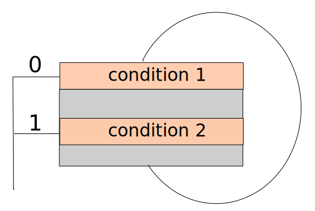
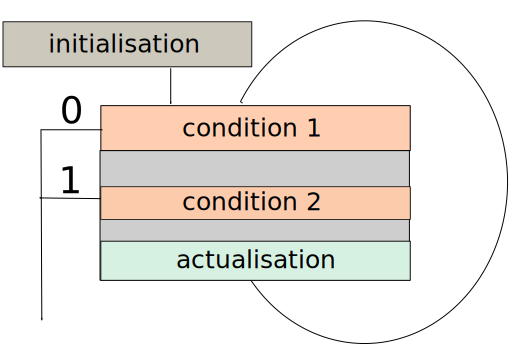

Programmation en C
John Samuel
CPE Lyon
Année: 2018-2019
Courriel: john(dot)samuel(at)cpe(dot)fr


Objectifs
- Syntaxe et bases de la programmation
- Manipulation de buffer
- Initiation au concept de chaine de compilation

Ce module est divisé en deux parties:
- Cours: 12h
- Travaux pratiques: 24h
Module:
- Système d'exploitation: Linux
- Compilateur: gcc
- Éditeur: Vim, Emacs (ou selon votre choix)
Cours:
- Interactifs
- Programmation en live
- Les questions: chaque 20-30 mins
- Devoir surveillé: 60%
| Cours |
Dates |
| Cours 1 |
17 septembre |
| Cours 2 |
20 septembre |
| Cours 3 |
25 septembre |
| Cours 4 |
27 septembre |
| Cours 5 |
3 octobre |
| Cours 6 |
4 octobre |
Travaux pratiques
- Groupes: A, B, C, D
- Programmation en binôme
Travaux pratiques:
- TP: 40%
- Projet divisé en 7 exercises
| TP |
Points |
| TP 1 |
1 |
| TP 2 |
3 |
| TP 3 |
3 |
| TP 4 |
4 |
| TP 5 |
4 |
| TP 6 |
5 |
| TP 7 |
(BONUS, max. 2) |
Travaux pratiques
Chaque question a un niveau de difficulté
- ★: Facile
- ★★: Difficulté moyenne
- ★★★: Difficile
Travaux pratiques: Rendus
- Il y a deux parties de rendu: rapport d’auto-évaluation et les sources
- Votre dossier de rendu doit contenir les fichiers suivants:
- README: rapport d’auto-évaluation
- INSTALL: Description de la compilation et l’exécution de votre application
- Makefile
- CONTRIBUTORS: Noms et prénoms de contributeurs
- src/ : les sources
Travaux pratiques: Rendus
- Votre rendu doit renommer comme groupe[ABCD]NN, où NN est le numéro de votre groupe (e.g., groupeA01, groupeB01 etc.).
- Ecrivez README, INSTALL et CONTRIBUTORS en format markdown.
- Le contenu de README rapport d’auto-évaluation :
- Objectif: Quel est l’objectif de votre projet/TP?
- Exercice N (N: [1..7])
- Fichiers: Noms de fichiers
- Bibliothèques: les bibliothèques standards
- Références: les URLs, les numéros de groupes
- Difficulté: niveau de difficulté (facile, moyenne, difficile)
- Commentaires (optionnels): remarques etc.
Travaux pratiques: Objectifs
- Créer, compiler et exécuter un projet C
- Comprendre la chaine de compilation en utilisant GCC (GNU compilation chain) : prétraitement jusqu’à l’exécution
- Travailler avec les bibliothèques standards et les appels de système d’exploitation (fichiers, les sockets réseau etc.)
- Comprendre les pointeurs et manipuler les buffers en utilisant les pointeurs
- Travailler avec les différents formats de données comme BMP et les structures de données
- Créer un simple programme client-serveur pour le transfert de fichiers et messages
- Exécuter les applications existantes sur la machine (e.g. GNU plot)
- Documenter et tester une application
Donnez des exemples de logiciels écrits en C
C est un langage de programmation
- impératif (procédural)
- structuré
- compilée
Remarque: Pas de classes (Ce n'est pas un langage de programmation orienté-objet!!!)


C
- Auteur Dennis Ritchie, Bell Labs
- Date de première version en 1972
/* Fichier: bonjour1.c
* affiche 'Bonjour le Monde!!!' à l'écran.
* auteur: John Samuel
* Ceci est un commentaire sur plusieurs lignes
*/
#include
<stdio.h> // headers
// Ceci est un commentaire
sur une ligne
int main()
{
printf("Bonjour le Monde
!!!");
return
0;
}
/* Fichier: bonjour2.c
* affiche un message à l'écran en utilisant un variable
* auteur: John Samuel
* Ceci est un commentaire
sur plusieurs lignes
*/
#include <stdio.h> // headers
int main()
{
int year = 2017;
//déclaration d'un variable
printf("Bonjour le Monde!!! C'est l'annee %d", year);
return 0;
}
La compilation
$ gcc bonjour1.c
L'exécution
$./a.out
Bonjour le Monde!!!
La compilation
$ gcc -o bonjour bonjour2.c
L'exécution
$./bonjour
Bonjour le Monde!!! C'est l'annee 2017
Commentaires sur une ou plusieurs lignes
// Ceci est un commentaire sur une ligne
/* Ceci est un
* commentaire sur
* quatre lignes
*/
| Types |
Mots clés |
Exemples |
| caractères |
char |
'h', 'a', ... |
| entiers |
short, int, long, long long |
...,-1,0,1,... |
| nombres en flottant |
float, double, long double |
3.14, 3.14e23 |
| énumrérations |
enum |
ETUDIANT, STAGIAIRE |
| Types |
Mots-clés |
| caractères |
signed char, unsigned char |
| entiers |
signed short, signed int, signed long, signed long long,
unsigned short, unsigned int, unsigned long, unsigned long long |
La taille des types de base n'est pas standardisée!
char my_char_var1 = 'a';
char my_char_var2 = -125;
unsigned char my_char_var3 = 225;
Remarque: Remarquez-bien l'utilisation de sous-tiret en nommant les variables

char my_char_var = 'a';
unsigned char my_uchar_var = 234;
short my_short_var = -12;
unsigned short my_ushort_var = 65535;
int my_int_var = 12;
unsigned int my_uint_var = 3456;
long my_long_var = -1234553L;
unsigned long my_ulong_var = 234556UL;
long long my_llong_var = 1123345LL;
unsigned long long my_ullong_var = 1234567ULL;
float my_float_var = 3.14;
double my_double_var = 3.14E-12;
long double my_long_double_var = 3.14E-22;
énumrérations
enum status {ETUDIANT, STAGIAIRE};
enum status s = ETUDIANT;
enum status {ETUDIANT=1, STAGIAIRE};
enum boolean {FAUX=0, VRAI};
Remarque: enum: unsigned int
L'intervalle minimum et maximum de types de base en utilisant limits.h
| Mots clés |
Intervalle |
| signed char |
[SCHAR_MIN, SCHAR_MAX] |
| unsigned char |
[UCHAR_MIN, UCHAR_MAX] |
| Mots clés |
Intervalle |
| (signed) short int |
[SHRT_MIN, SHRT_MAX] |
| unsigned short int |
[0, USHRT_MAX] |
| (signed) int |
[INT_MIN, INT_MAX] |
| unsigned int |
[0, UINT_MAX] |
| (signed) long |
[LONG_MIN, LONG_MAX] |
| unsigned long |
[0, ULONG_MAX] |
| (signed) long long |
[LLONG_MIN, LLONG_MAX] |
| unsigned long long |
[0, ULLONG_MAX] |
L'intervalle minimum et maximum de types flottant en utilisant float.h
| Mots clés |
Intervalle |
| float |
[FLT_MIN, FLT_MAX] |
| double |
[DBL_MIN, DBL_MAX] |
| long double |
[LDBL_MIN, LDBL_MAX] |
sizeof
sizeof (char) //type
sizeof (my_uchar_var) //variable
Afficher à l'écran
printf("%d",
my_int_var);
printf("%f",
my_float_var);

| Mots clés |
Code de conversion |
| char |
c |
| unsigned char |
hhu |
| short |
hd |
| unsigned short |
hu |
| int |
d, i |
| unsigned int |
u |
| long int |
ld |
| unsigned long int |
lu |
| Mots clés |
Code de conversion |
| long long int |
lld |
| unsigned long long int |
llu |
| float |
f, F |
| double |
g, G |
| long double |
Lg |
| string of characters |
s |
| Character |
Code de conversion |
| Retour-chariot |
\n |
| Tabulation |
\t |
Notation binaire

int
valeur = 0b10100100;
Notation octale

int
valeur = 0b10100100;
printf("notation octale: %o\n", valeur);

Notation héxadecimale

int
valeur = 0b10100100;
printf("notation hexadecimale: %x\n", valeur);

| Opérateur |
Objectif |
| + |
addition |
| - |
soustraction |
| * |
multiplication |
| / |
division |
| % |
modulus |
int
a = 20,
b = 10;
| Opérateur |
Exemple |
Résultat |
| + |
a + b |
30 |
| - |
a - b |
10 |
| * |
a * b |
200 |
| / |
a / b |
2 |
| % |
a % b |
0 |
| Opérateur |
Objectif |
| < |
inférieur |
| <= |
inférieur ou égale |
| > |
supérieur |
| >= |
supérieur ou égale |
| == |
égale |
| != |
différent |
int
a = 20,
b = 10;
| Opérateur |
Exemple |
Résultat |
| < |
a < b |
0 |
| <= |
a <= b |
0 |
| > |
a > b |
1 |
| >= |
a >= b |
1 |
| == |
a == b |
0 |
| != |
a != b |
1 |
int
a = 20,
b = 0;
| Opérateur |
Objectif |
Exemple |
Résultat |
| ! |
Négation |
!a |
0 |
| && |
Et |
a && b |
0 |
| || |
Ou |
a || b |
1 |
int
a = 20,
b = 0;
| Opérateur |
Exemple |
Résultat |
| a++ |
b = a++ |
a = 21,
b = 20
|
| ++a |
b = ++a |
a = 21,
b = 21
|
| a-- |
b = a-- |
a = 19,
b = 20
|
| --a |
b = --a |
a = 19,
b = 19
|
| Bit 1 |
Bit 2 |
& |
| |
^ (XOR) |
| 0 |
0 |
0 |
0 |
0 |
| 0 |
1 |
0 |
1 |
1 |
| 1 |
0 |
0 |
1 |
1 |
| 1 |
1 |
1 |
1 |
0 |
int
a = 0b01000100;
| Opérateur |
Objectif |
Exemple |
Résultat |
| ~ |
Négation |
~a |
0xffffffbb |
| & |
ET |
a & 0x4 |
0x4 |
| | |
OR |
a | 0x2 |
0x46 |
| ^ |
XOR |
a ^ 0x4 |
0x40 |
| << |
décalage à gauche |
a << 1 |
0x88 |
| >> |
décalage à droite |
a >> 1 |
0x22 |
int
a = 20,
b = 0;
| Opérateur |
Objectif |
Exemple |
| = |
equal |
a = b |
| += |
addition |
a += b |
| -= |
substraction |
a -= b |
| *= |
multiplication |
a *= b |
| /= |
division |
a /= b |
| %= |
modulo |
a %= b |
Remarque:
a
op =
b ::-
a
=
a
op
b
| Opérateur |
Objectif |
Exemple |
| &= |
ET |
a &= b |
| |= |
OU |
a |= b |
| ^= |
XOR |
a ^= b |
| <<= |
décalage à gauche |
a <<= b |
| >>= |
décalage à droite |
a >>= b |
Remarque:
a
op =
b ::-
a
=
a
op
b
if
if (condition) {
...
}
if
int
a = 20,
b = 0;
if (a >
b) {
printf("a est supérieur à b");
}
if
if (condition1) {
...
} else if (condition2) {
...
} else {
...
}
Remarque 1: Toutes les nombres non nulles sont ont considérées comme vrai ('TRUE')
Remarque 2: else est optionnel
if
int
a = 20,
b = 0;
if (a >
b) {
printf("a est supérieur à b");
} else if (a <
b) {
printf("a est inférieur à b");
} else {
printf("a égale b");
}
switch
switch (expression) {
case valeur1 : statements1
case valeur2 : statements2
...
default : statementsn
}
Remarque: expression doit être soit:
char,
short,
int ou
long
switch
int
a = 20;
switch (a) {
case 10 : statement1
break;
case 20 : statement2
case 30 : statement3
break;
...
default : statementn
}
Remarque: Les deux instructions statement2 et statement3 seront exécutées.
Que sera-t-il affiché à l'écran suite à l'exécution de ce programme?
if (1) {
printf("Hi");
} else {
printf("Bonjour");
}
for
for(initialisation;condition;actualisation){
...
}

for
int
a = 0;
for( a = 0;
a > 10;
a++){
...
}
for
int
a = 0;
for(;
a > 10;
){
...
}
Remarque: Une ou toutes les instructions d'initialisation, de condition ou d'actualisation peuvent être manquant.
for
int
a = 0;
for( a = 0;
a > 10;
a++){
...
a += 2 ;
...
}
while
while(condition){
...
}
while
int
a = 20;
while(a > 0){
...
a--;
...
}
while
int
a = 0;
while(a < 20){
...
a++;
...
}
do..while
do{
...
} while(condition);

do..while
int
a = 20;
do{
...
a --;
...
} while(a > 0);
do..while
int
a = 0;
do{
...
a ++;
...
} while(a < 20);
break
do{
...
if (condition 1) {
...
break;
}
...
} while(condition 2);
continue
do{
...
if (condition 1) {
...
continue;
}
...
} while(condition 2);

break
while(condition 1){
...
if (condition 2) {
...
break;
}
...
};

continue
while(condition 1){
...
if (condition 2) {
...
continue;
}
...
};
break
for(initialisation;condition 1;actualisation){
...
if (condition 2) {
...
break;
}
...
};

continue
for(initialisation;condition 1;actualisation){
...
if (condition 2) {
...
continue;
}
...
};

Écrivez un programme qui affiche 0..20 en ordre croissant et décroissant
utilisant for, while et do..while.
Écrivez un boucle infini en utilisant for, while, do..while.
Tableau
est un ensemble d'éléments homogènes

Tableaux de tableaux
Tableaux à deux indices

Tableaux de tableaux
Tableaux à plusieurs indices

Déclaration
char name[20];
Remarque: Langage C n'a pas un type nommé 'string'.
Déclaration
int iarray[20];
float farray[20];
double darray[20];
Initialisation
int i;
int array[20];
for ( i = 0;
i < 20; i++) {
array[i] =
i;
}
Initialisation
int prices[5] = {
11, 12, 13, 14, 15 };
int rooms[] = {
301, 302, 303 };
char message[] = "Bonjour Le Monde!!";
Remarque: Nous n'avons pas écrit la taille de rooms, message
Initialisation
int prices[2][2] = {
{11, 12},
{13, 14}
};
int rooms[][2] = {
{201, 202},
{301, 302}
};
char message[2][11] =
{"Bonjour", "Le Monde!!"};
Références
Crédits d'images